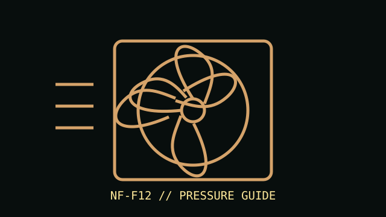

[ IDENTIFIED MODEL // NF-F12 PWM ]
Noctua NF-F12 PWM
A 120 mm square-frame PWM fan with a pressure-focused stator and rotor design. Do not substitute the higher-speed NF-F12 industrialPPC variant.

Exact model: NF-F12 PWM. Specifications below describe this PWM model, not FLX, ULN, chromax, or industrialPPC variants.
Specifications
| Frame | 120 × 120 × 25 mm |
|---|---|
| Speed / airflow / pressure / noise | 300–1500 RPM; up to 93.4 m³/h (54.97 CFM); 2.61 mm H₂O; 22.4 dB(A). |
| Bearing | SSO2 bearing |
| Connector / control | 4-pin fan connector; PWM speed control. |
| Electrical | 12 V DC rated; maximum input current 0.05 A. |
| Fit and host compatibility | Standard 120 mm case or radiator mount with 25 mm fan depth; confirm screw pattern, clearance, airflow direction, and header current limit in the host/radiator documentation. |
Installation
Use a 4-pin PWM header or controller with compatible pinout. Check radiator thickness, fastener length, and blade clearance before mounting; do not force standard fan screws into a radiator core.
Manufacturer sources
- Noctua — NF-F12 PWM product pageProduct identity, application, and included product features.
- Noctua — NF-F12 PWM specificationsModel-specific dimensions, performance, electrical data, bearing, and connector.